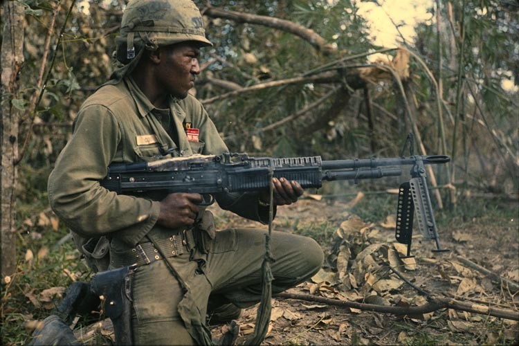

"Nineteen-, twenty-year-old high school dropouts that come from the lowest socioeconomic rung of American society... they didn't have the escape routes that the elite and the wealthy and the privileged had... but to see these kids, who had the least to gain.. they weren't going to be rewarded for their service in Vietnam. And yet their infinite patience, their loyalty to each other, their courage under fire, was just phenomenal. And you have to ask yourself: how does America produce young men like this?" - Army Veteran Vincent Okamoto in the Introduction of The Vietnam War: An Intimate History
